Вы отстранены от выполнения экзаменационной работы.
В ходе проведения экзамена зафиксировано нарушение установленного порядка его прохождения:
вы осуществили переход на другую вкладку браузера либо свернули окно экзаменационной системы.
В соответствии с правилами проведения экзамена подобные действия рассматриваются как
нарушение условий выполнения экзаменационной работы.
Ваш экзамен прекращён. Результаты выполненной вами работы аннулируются.
Время экзамена истекло
03:55:00
Единый государственный экзамен по МЕМАМ 2026
ЕГЭ — лишь одно из жизненных испытаний, которое
вам предстоит пройти.
Будьте уверены: каждому, кто сидел в социальных сетях, по силам сдать ЕГЭ.
Все задания составлены на основе мемов и интернет-культуры 2026 года.
Поэтому каждый из вас может успешно сдать экзамен.
Инструкция по выполнению работы
Экзаменационная работа состоит из двух частей, содержащих 26 заданий.
Часть 1 содержит 16 заданий, часть 2 содержит 10 заданий.
На выполнение экзаменационной работы по Мемам отводится 3 часа 55 минут (235 минут).
В заданиях 1–16 вам необходимо выбрать правильный вариант ответа.
Цифру, под которой находится выбранный вами вариант, запишите в поле ввода ответа.
В заданиях 17–26 вам необходимо самостоятельно написать правильный ответ.
Вариантов ответа не будет. Ответ записывайте в любом регистре на кириллице или цифрами,
если того требует задание.
Баллы, полученные вами за выполненные задания, суммируются.
Постарайтесь выполнить как можно больше заданий и набрать наибольшее количество баллов.
Максимальное количество баллов - 100
После завершения работы проверьте, чтобы ответ на каждое задание был дан
и записан в правильном формате.
Желаем успеха!
Часть 1
1
В интернет-коммуникации 2026 года широкое
распространение получил глагол «могнуть».
Выберите вариант, наиболее точно раскрывающий значение данного слова в контексте
его употребления пользователями социальных сетей.
1) Превзойти кого-либо или что-либо по определённому показателю.
2) Осознать смысл ранее непонятного явления.
3) Оказаться в положении, уступающем другому участнику.
4) Совершить действие за необычайно короткий промежуток времени.
2
В 2026 году особую популярность в социальных сетях приобрели видеоролики,
созданные с использованием технологий искусственного интеллекта.
В подобных видеороликах нередко изображались антропоморфные фрукты,
вступающие в различные взаимоотношения друг с другом.
Используя представленное изображение, определите,
какой персонаж появился в результате союза двух клубник.
1) Клубника.
2) Яблоко.
3) Банан.
4) Ананас.
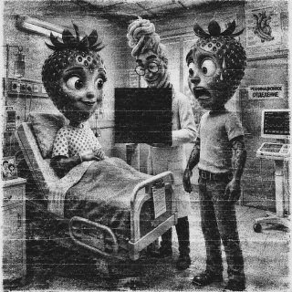
3
Какое из перечисленных определений наиболее точно
раскрывает значение термина «looksmaxxing»,
получившего распространение в интернет-культуре?.
1) Стремление улучшить свою внешность посредством ухода за собой,
изменения стиля и других способов повышения привлекательности.
2) Стремление намеренно сделать свою внешность максимально необычной и вызывающей,
чтобы привлечь внимание окружающих.
3) Способность оценивать внешность
других людей по специальной шкале привлекательности и
определять их социальный статус.
4) Создание цифрового изображения идеальной внешности
с помощью фильтров и технологий искусственного интеллекта.
4
В 2026 году в русскоязычном сегменте интернета получил
распространение мем «Сова на скакалке».
Какое из перечисленных значений наиболее точно
характеризует использование данного мема в интернет-коммуникации?
1) Символ неожиданного успеха, сопровождающего человека в сложной ситуации.
2) Предзнаменование надвигающихся
неприятностей или неблагоприятного исхода событий.
3) Обозначение человека,
который пытается справиться одновременно с
несколькими задачами.
4) Символ абсурдного поведения,
не имеющего никакого отношения к происходящим событиям.
5
В феврале 2026 года широкую известность в
социальных сетях приобрела японская макака по имени Панч.
Особое внимание пользователей привлекла мягкая игрушка,
с которой животное практически не расставалось.
Рассмотрите представленное изображение и определите,
игрушка какого животного была у Панча.
1) Шимпанзе.
2) Макака.
3) Гиббон.
4) Орангутанг.
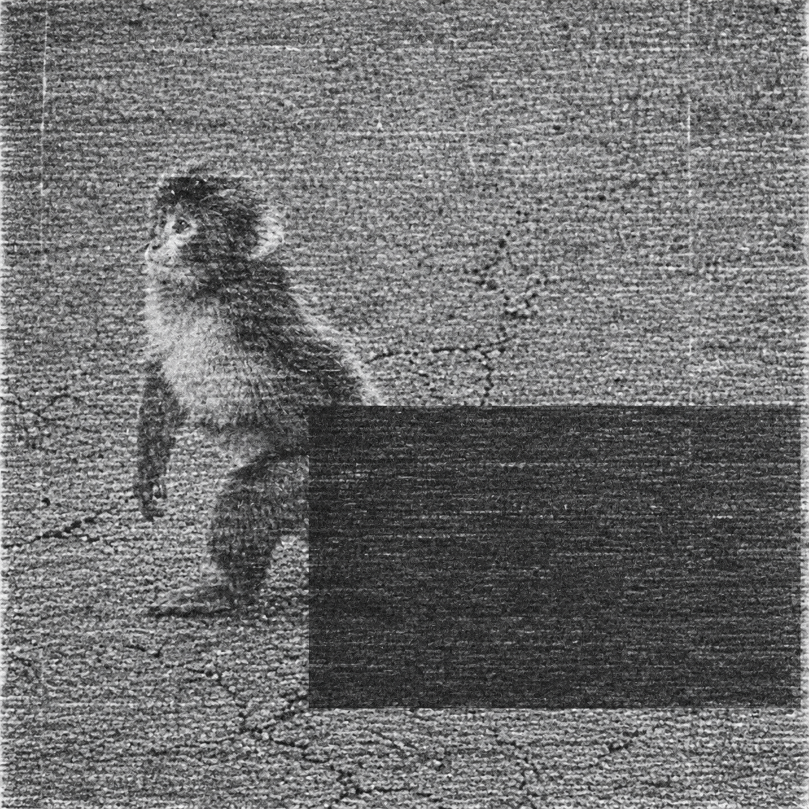
6
В начале 2026 года в социальных сетях широкое распространение получил видеоролик
с участием рэпера Toxi$,
исполняющего композицию NOBODY и танцующего под неё в домашней обстановке.
Данный фрагмент стал основой для многочисленных мемов и коротких видеороликов.
Вспомните, какой предмет исполнитель просит взять в обращении к девушке.
1) Ключи от автомобиля.
2) Мобильный телефон.
3) Кошелёк.
4) Бокал.
7
В 2026 году широкую популярность в социальных сетях приобрели видеоролики,
созданные с помощью технологий искусственного интеллекта.
Одним из персонажей, получивших особую известность благодаря подобным видео,
стал герой фильма «Старикам тут не место»,
изображённый на представленном ниже изображении.
Определите имя персонажа.
1) Антон Чигур
2) Антон Чигун
3) Антон Чибур
4) Антон Чарун
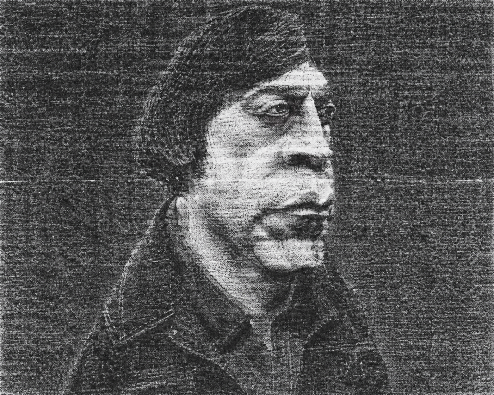
8
В 2026 году в социальных сетях приобрёл популярность фрагмент
мультфильма «Академия собственных ошибок, или Братья Пилоты спасают Россию» (1999),
созданного студией «Пилот». Произнесённая в нём реплика впоследствии стала самостоятельным
интернет-мемом и получила широкое распространение среди пользователей.
Выберите вариант, правильно завершающий высказывание персонажа: «Мужики, ай-да...»
1) ...пирожки трескать!
2) ...пироги лопать!
3) ...пирог уплетать!
4) ...пироги уминать!
9
В 2026 году в русскоязычном сегменте социальных сетей получил
распространение мем «Дом на Алмазной».
Его популярность связана с видеороликом Владуса,
в котором фигурирует необычная история с участием персонажа по имени Леня.
Какой номер дома упоминался в данном меме?
1) 23.
2) 33.
3) 43.
4) 53.
10
В 2026 году в социальных сетях широкую популярность приобрёл интернет-мем
с персонажем по прозвищу «Плаксик»,
отличающимся необычайно выразительной мимикой и большими глазами.
Персонаж появился в комедийном фильме «Сказки на ночь» (2008).
Определите, к какому виду животных относится Плаксик.
1) Декоративный кролик.
2) Морская свинка.
3) Шиншилла.
4) Хомяк.
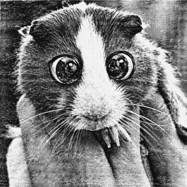
11
В социальных сетях получил распространение мем с изображением саблезубого тигра
Диего из мультфильма «Ледниковый период».
Изображение сопровождается короткой надписью,
ставшей узнаваемой среди пользователей интернет-культуры.
Определите, какое слово использовано в оригинальной версии мема.
1) Шалопай.
2) Негодник.
3) Поганец.
4) Плут.
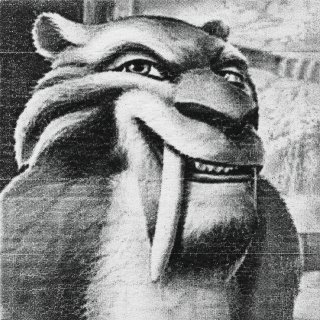
12
В одном из музыкальных номеров мультсериала
«Симпсоны» мистер Бёрнс исполняет песню High to Be Loathed,
перечисляя известных персонажей, исторических деятелей и злодеев.
Данная композиция стала источником многочисленных интернет-мемов.
Восстановите последовательность перечисления и определите,
кто следует непосредственно после Ральфа Нейдера.
1) Донки Конг.
2) Дарт Вейдер.
3) Эрик Картман.
4) Саймон Легри.
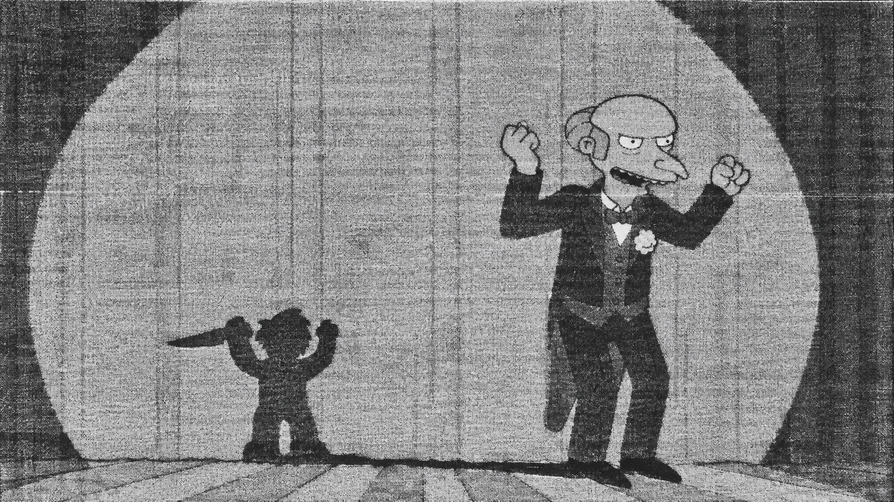
13
Некоторые интернет-мемы становятся популярными
благодаря коротким разговорным фразам,
которые впоследствии начинают использоваться в качестве самостоятельных реакций.
Одним из таких выражений стало «Да ты чё, базару нет».
Посмотрите на представленные изображения и определите,
кто является автором данной фразы.
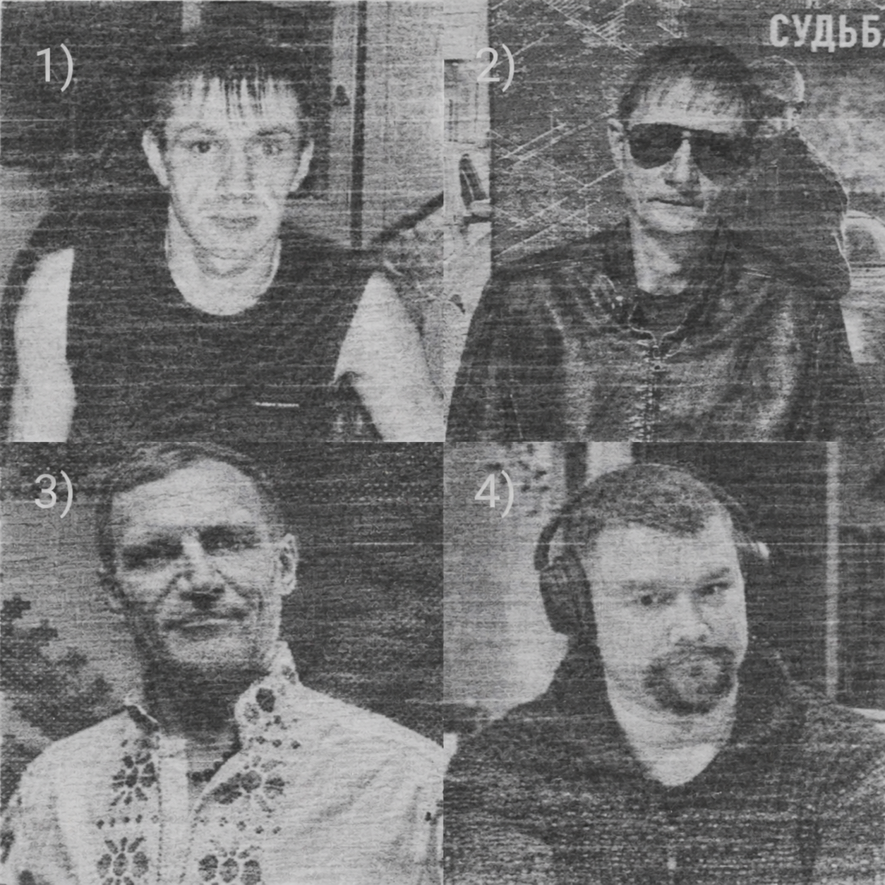
14
В апреле 2026 года в социальной сети TikTok получил распространение тренд,
в рамках которого обычное математическое равенство «7 × 7 = 49» приобрело необычное значение.
Пользователи стали использовать его для характеристики определённого типа людей,
наделяя данное выражение символическим смыслом.
Что подразумевается под выражением «7 × 7 = 49» в контексте данного интернет-тренда?
1) Человек, который всегда знает, что сказать, и умеет поддержать разговор.
2) Идеальный партнёр, с которым всё складывается легко и естественно.
3) Человек, который отличается необычным мышлением и нестандартным взглядом на мир.
4) Партнёр, который всегда готов удивлять и совершать неожиданные поступки.
15
Расположите перечисленные ниже интернет-мемы
в хронологическом порядке их появления в 2026 году.
В ответе укажите последовательность букв, соответствующих мемам,
начиная с самого раннего.
1)
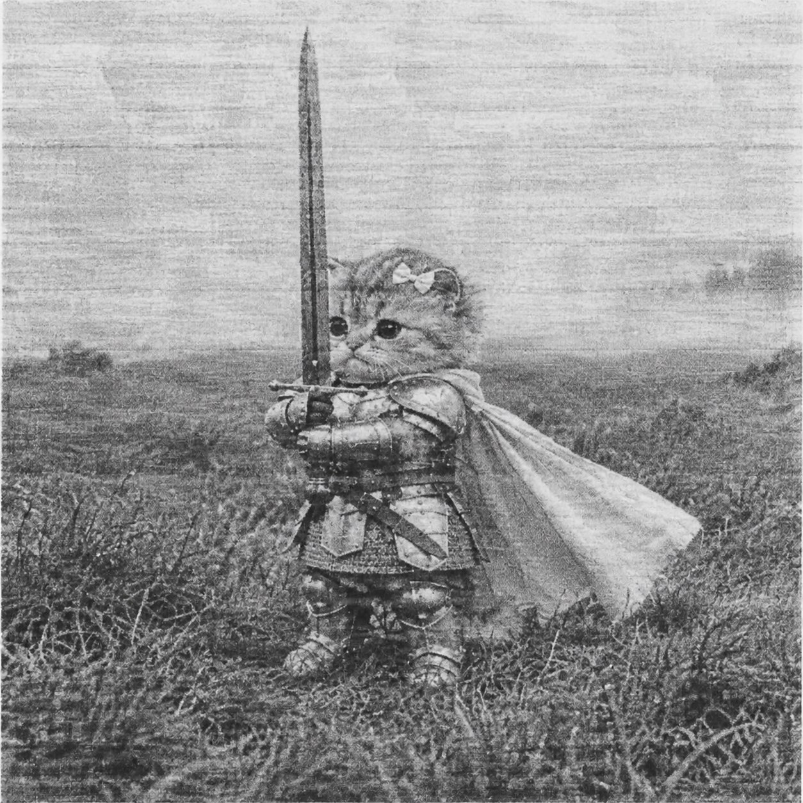
2)
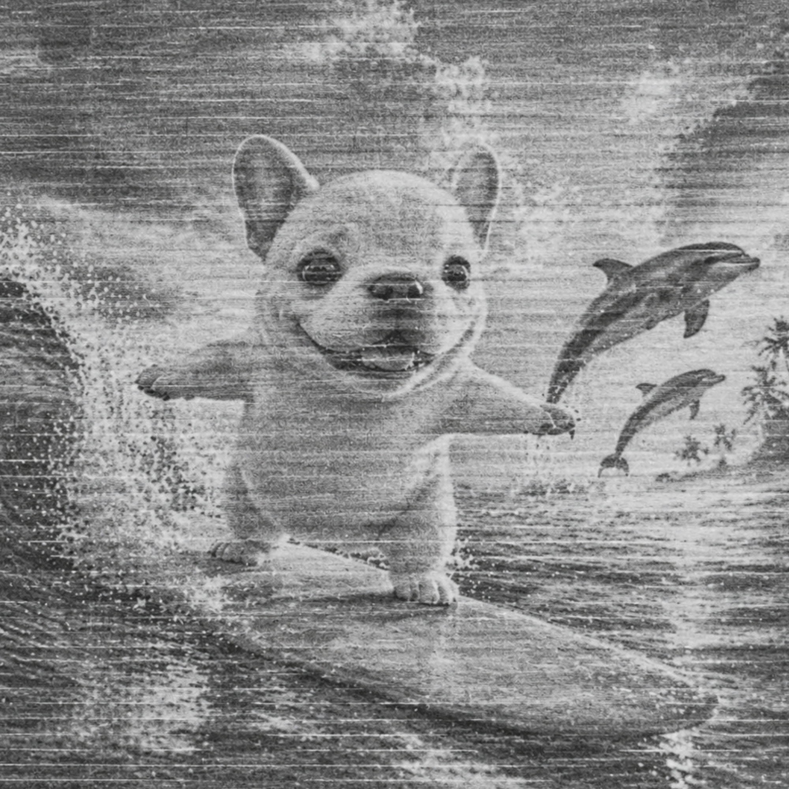
3)
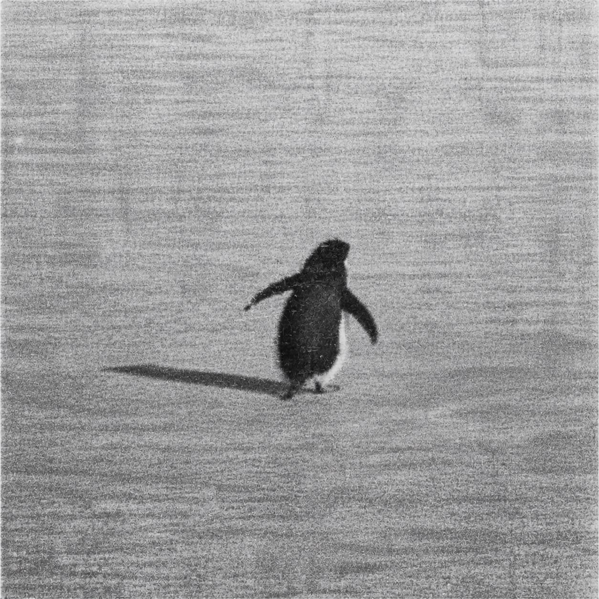
4)
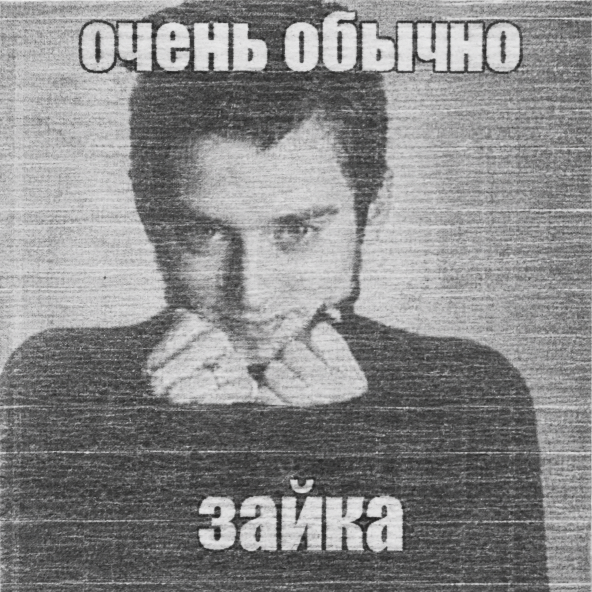
16
На представленном изображении показан автор одного из интернет-мемов,
получивших распространение в социальных сетях в 2026 году.
Определите, какой мем связан с изображённым человеком.
1) «Можно. А зачем?»
2) «Гора Эверест на фоне меня - фигня»
3) «Да ты шуешь!»
4) «Я в моменте, но момент не во мне»
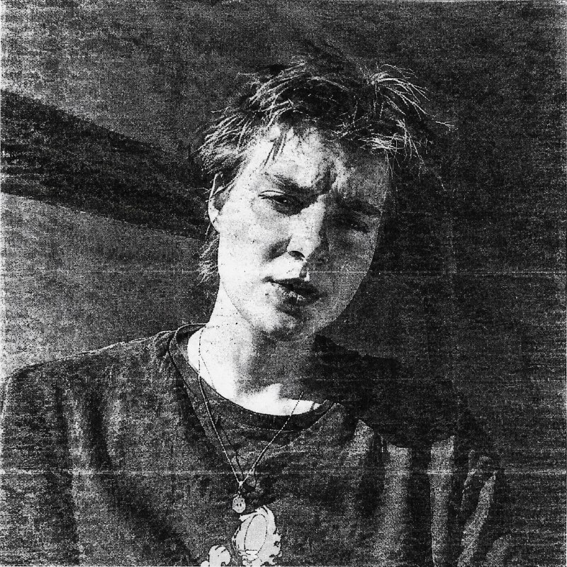
Часть 2
17
В социальных сетях получил распространение интернет-мем
с изображением антропоморфного персонажа,
внешность которого основана на бытовом электрическом приборе.
Укажите прозвище данного персонажа, закрепившееся в интернет-культуре.
Ответ запишите одним словом.
18
В социальных сетях широкое распространение получил интернет-мем,
основанный на фрагменте произведения, в котором один
из персонажей произносит фразу «Зовусь я гений».
Данное высказывание стало узнаваемым среди пользователей и приобрело самостоятельную
популярность в интернет-культуре.
Определите, как зовут персонажа, произносящего данную фразу.
Ответ запишите двумя словами
19
На представленном изображении запечатлена женщина,
ставшая героиней популярного интернет-мема. Вспомните и запишите фразу,
произнесённую ею в оригинальном видеоролике.
20
В одном из видеороликов блогера Vanzai запечатлён момент,
ставший основой для популярного интернет-мема.
Определите, на какой секунде видеоролика,
согласно оригинальному высказыванию автора, начались слёзы.
Ответ запишите только числом, без указания единицы измерения.
21
На представленном изображении показан эпизод из популярного интернет-мема.
Один из персонажей передаёт другому закрытый конверт.
Определите, что находится внутри конверта.
Ответ запишите в виде словосочетания из двух слов.
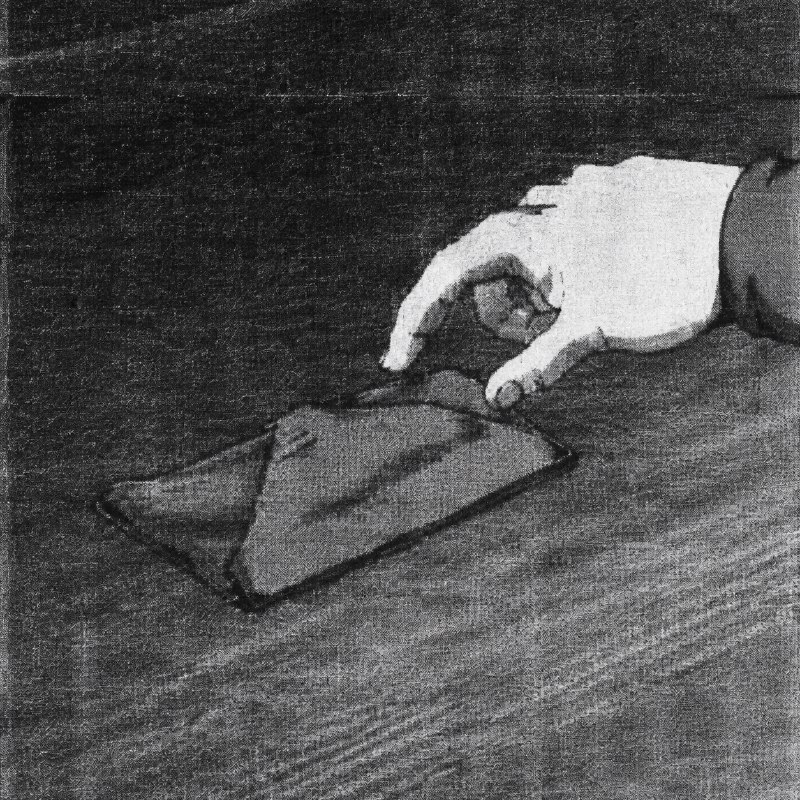
22
На представленном изображении показан эпизод мультсериала «Рик и Морти»,
ставший основой для популярного интернет-мема.
Вспомните и запишите слово, произнесённое в адрес Джерри в данном моменте.
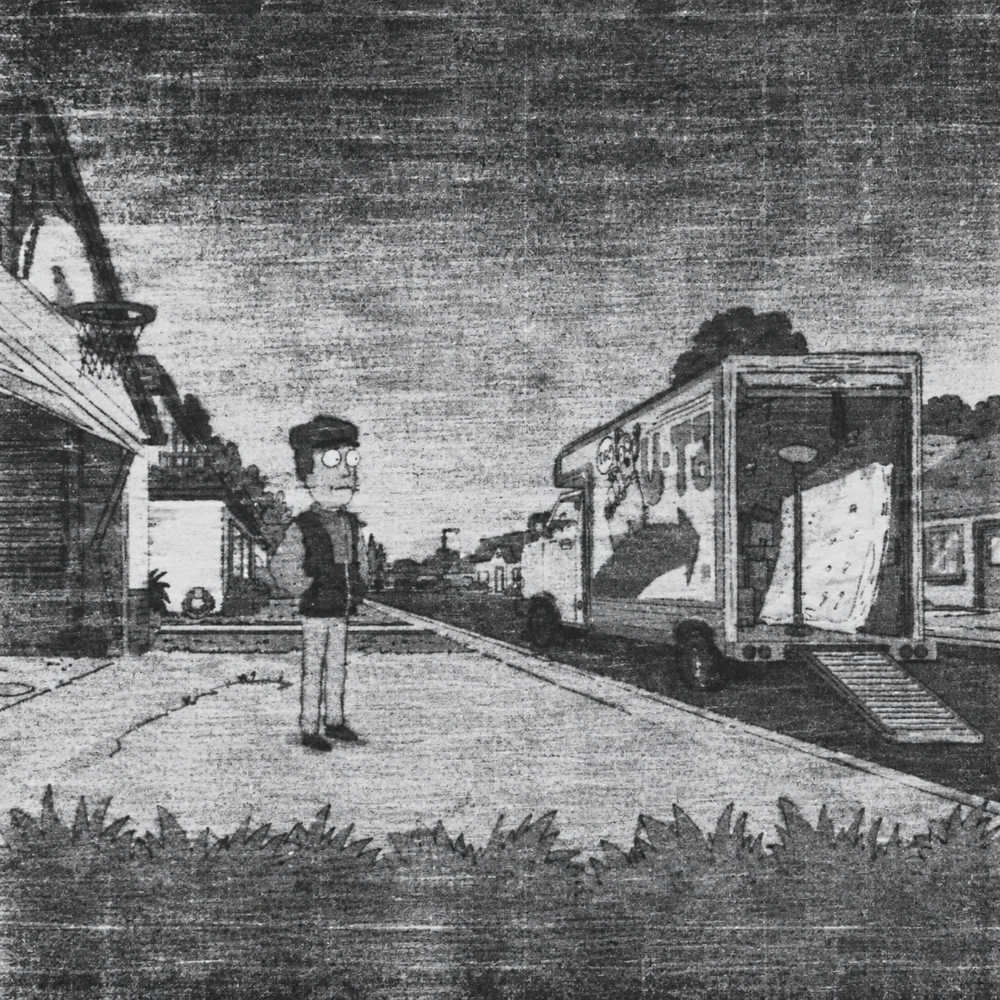
23
В игре Left 4 Dead 2 один из персонажей произносит фразу
«Класс, прям как во втором Team Fortress»,
ставшую популярной среди пользователей игровых сообществ.
Укажите имя данного персонажа.
24
Летом 2026 года в социальных сетях широкую
популярность приобрёл необычный енот из Сиэтла,
внешний вид которого привлёк внимание пользователей
и стал основой для многочисленных интернет-мемов.
Укажите кличку данного животного.
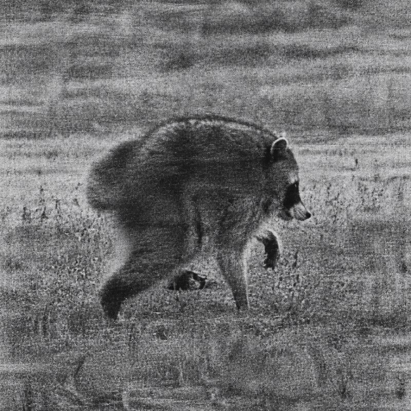
25
На представленном изображении запечатлена американская актриса,
фотография которой стала популярным реакционным мемом в социальных сетях.
Укажите полное имя и фамилию актрисы.
26
В начале 2026 года широкое распространение в социальных сетях получил
видеомем с изображением быка,
исполняющего известную русскую скороговорку.
Воспроизведите полный текст скороговорки которую он пел.
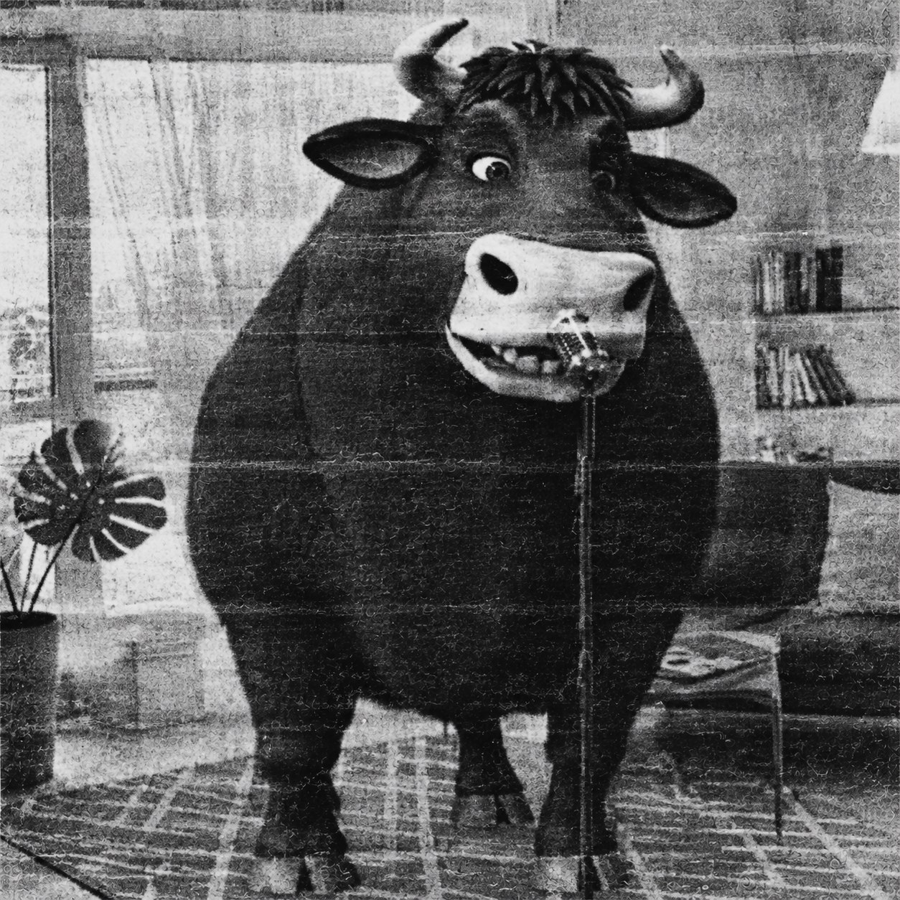
РЕЗУЛЬТАТЫ ЕГЭ
ПО МЕМАМ 2026
МЕМОЛОГ Ⅱ СТЕПЕНИ
Иванов Иван Иванович
НАБРАНО БАЛЛОВ
87/100
ЭКЗАМЕН СДАН
порог - 27 баллов
Первичных баллов набрано - 24/26
Вторичных баллов набрано - 87/100
№
Ваш ответ
Верный ответ
Баллов получено
Время сдачи экзамена - 00:00:00
Спасибо за сдачу экзамена!🎓
Надеюсь вам понравилось и вы хорошо провели время =)
Если хотите поддержать проект и меня, можете отправить донат на
бусти